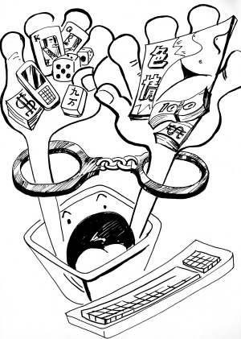

 网络犯罪，是指行为人运用计算机技术，借助于网络对其系统或信息进行攻击，破坏或利用网络进行其他犯罪的总称。既包括行为人运用其编程，加密，解码技术或工具在网络上实施的犯罪，也包括行为人利用软件指令，网络系统或产品加密等技术及法律规定上的漏洞在网络内外交互实施的犯罪，还包括行为人借助于其居于网络服务提供者特定地位或其他方法在网络系统实施的犯罪。简言之，网络犯罪是针对和利用网络进行的犯罪，网络犯罪的本质特征是危害网络及其信息的安全与秩序。
1997年我国刑法修订将其中部分行为予以犯罪化吸收到刑法典中，刑法理论界对该类犯罪行为也早有探讨。但不论已有的理论成果或现行刑法规定更多的是关注计算机信息系统而对网络问题却少有专门探讨。在计算机科学上，计算机网络毕竟不同于计算机信息系统本身，二者在外延上存在差别。
1994年2月18号国务院颁布的《中华人民共和国计算机信息系统安全保护条例》第2条规定：所谓计算机信息系统是指由计算机及其相关的配套的设备、设施（含网络）构成的，按照一定的应用目标和规则对信息进行收集、加工、存储、检索等处理的人机系统。由此可见，计算机信息系统是由计算机作为信息载体的系统。例如，一台计算机出厂时，只要已安装程序文件或应用文件，并具有信息处理功能，即构成一定信息系统，但由于未投入使用，没有按照一定的应用目标和规则对信息进行收集、加工、存储、传输、检索等处理，因而不能称为“人机系统”，其信息安全当然不受上述条例保护，更不受刑法保护[1]。新兴的网络科学认为计算机网络是用电缆、光缆、无线电波或其他物理链路，将地理上分散的计算机信息系统连接起来的资源共享系统[2]。通过上述定义的比较，可以认为计算机网络与计算机系统在概念的外延上是有交叉的，计算机信息系统并非一定存在着网络，通过计算机网络组建的计算机信息系统是其高级形式。因此，计算机网络实际上是多个单机信息系统的联接。根据《中华人民共和国计算机信息网络国际管理暂行规定》实施办法的规定，我国时下主要存在以下几种网络形式：国际互联网、专业计算机信息网、企业计算机信息网。其中，国际联网是指中华人民共和国境内的计算机互联网络、专业信息网络、企业信息网络，以及其他通过专线进行国际联网的计算机信息网络同外国的计算机信息网相联接。专业信息网络是为行业服务的专用计算机信息网络；企业信息网络，是企业内部自用的计算机信息网络。
由于受到计算机犯罪概念的影响，理论界有学者认为“网络犯罪就是行为主体以计算机或计算机网络为犯罪工具或攻击对象，故意实施的危害计算机网络安全的，触犯有关法律规范的行为[3]。”从此概念出发，网络犯罪在行为方式上包括以计算机网络为犯罪工具和以计算机网络为攻击对象两种；在行为性质上包括网络一般违法行为和网络严重违法即犯罪行为两种。此概念的界定过于宽泛，不利于从刑法理论对网络犯罪的研究。综观现有的关于网络犯罪的描述，大体可归纳为三种类型：第一，通过网络以其为工具进行各种犯罪活动；第二，攻击网络以其为标进行的犯罪活动；第三，使用网络以其为获利来源的犯罪活动。第一种以网络为犯罪手段，视其为工具，可以称之为网络工具犯。由于网络已渗透到人们生活方方面面，其被犯罪分子利用进行犯罪活动的表现形形色色，可以说刑法分则中除了杀人、抢劫、强奸等需要两相面对的罪行以外，绝大多数都可以通过网络进行。后两类型均以网络为行为对象，称其为网络对象犯。它包含着以网络为获利来源的犯罪行为和以网络为侵害对象的犯罪行为，分别称为网络用益犯和网络侵害犯。
同传统的犯罪相比，网络犯罪具有一些独特的特点：既成本低、传播迅速，传播范围广；互动性、隐蔽性高，取证困难；严重的社会危害性；网络犯罪是典型的计算机犯罪。
第一，成本低、传播迅速，传播范围广。就电子邮件而言，比起传统寄信所花的成本少得多，尤其是寄到国外的邮件。网络的发展，只要敲一下键盘，几秒种就可以把电子邮件发给众多的人。理论上而言，接受者是全世界的人。
第二，互动性、隐蔽性高，取证困难。网络发展形成了一个虚拟的电脑空间，既消除了国境线，也打破了社会和空间界限，使得双向性、多向性交流传播成为可能。在这个虚拟空间里对所有事物的描述都仅仅是一堆冷冰冰的密码数据，因此谁掌握了密码就等于获得了对财产等权利的控制权，就可以在任何地方登陆网站。
第三，严重的社会危害性。随着计算机信息技术的不断发展，从国防、电力到银行和电话系统此刻都是数字化、网络化，一旦这些部门遭到侵入和破坏，后果将不可设想。
第四，网络犯罪是典型的计算机犯罪。时下对什么是计算机犯罪理论界有多种观点，其中双重说（即行为人以计算机为工具或以其为攻击对象而实施的犯罪行为）的定义比较科学。网络犯罪比较常见的偷窥、复制、更改或者删除计算机数据、信息的犯罪，散布破坏性病毒、逻辑炸弹或者放置后门程序的犯罪，就是典型的以计算机为对象的犯罪，而网络色情传播犯罪、网络侮辱、诽谤与恐吓犯罪以及网络诈骗、教唆等犯罪，则是以计算机网络形成的虚拟空间作为犯罪工具、犯罪场所进行的犯罪。